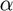
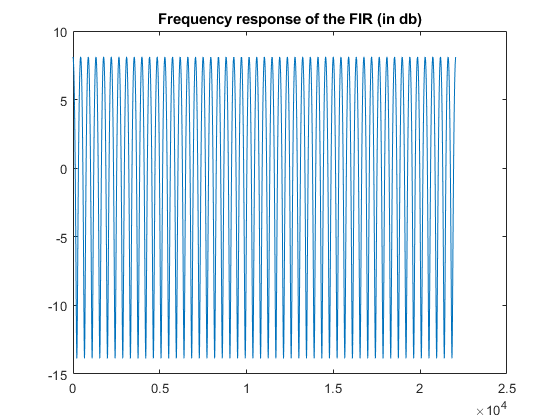
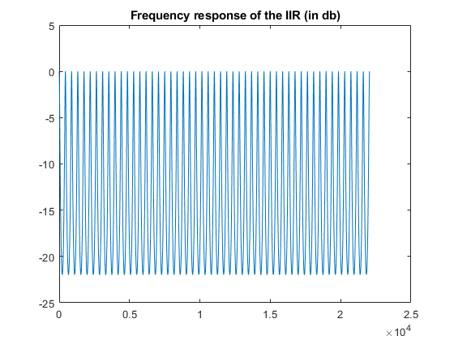

Contents
clear variables; close all;
FIR DELAY EFFECT
In this part we're implementing the filter s[t]=e[t]+  e[t - D]which add a delay ( e[t - D]) to the initial signal (e[t]).
To implement it we've first compute the impulse response which is h(0) = 1, h(D)= and h(n) = 0 for all others.
%Opening the file [x,fs]=audioread('string1.mp3'); %Switching it from stereo to mono x = x(:,1); %Defining the delay and the attenuation coefficient D=100; alpha = 0.5; %Creating the delay filter with its impulse response h= zeros(D+1,1); h(1) = 1; h(D+1) = alpha; %Frequency response of the filter [H,W] = freqz(h,1,round(length(x)/2),fs); figure(); plot(W,20*log(abs(H)+eps)); title('Frequency response of the FIR (in db)'); %Applying the filter y = filter(h ,1,x) ; %Playing it to check wether it works or not %sound(y , fs);
IRR Delay Effect
%Defining the parameters D= 100; alpha = 0.5; beta = 0.5; %Defining the filter B= [alpha]; A =zeros(size(x)); A(1)= 1; A(D+1) = -(beta); y2 = filter(B,A,x); [H,W] = freqz(B,A,round(length(x)/2),fs); figure(); plot(W,20*log(abs(H)+eps)); title('Frequency response of the IIR (in db)'); sound(y2 , fs);